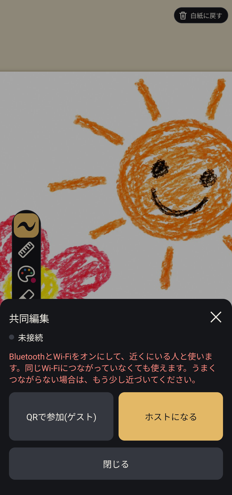
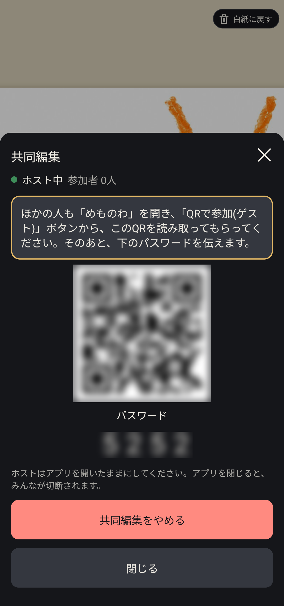
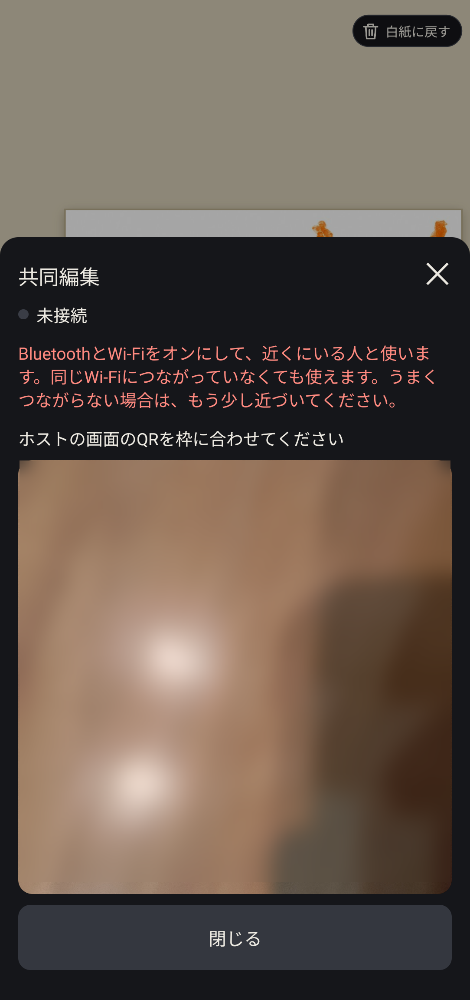
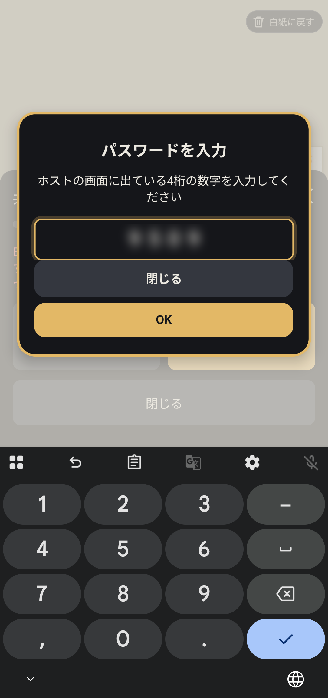
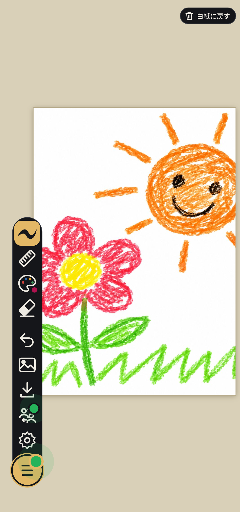

📖 はじめに（共同編集の特徴と準備）
「めものわ」の共同編集は、クラウドサーバーや外部インターネットを一切経由しません。お互いのスマートフォン同士が電波（Bluetooth / Wi-Fiダイレクト）で直接やり取りするため、次のような安心・快適な特長があります。
- インターネット不要: 電波の届かない山の中、飛行機の中、通信制限中の端末でも使えます。
- アカウント・ログイン不要: アプリを開いてすぐにつながります。
- セキュアな直接通信: データは外部サーバーに送信されず、端末間で暗号化されて直接届きます。
- QRコード＋4桁パスワード: 近くの意図した相手とだけ、安全かつ確実に接続できます。
共同編集を利用するすべての端末で、端末設定のBluetoothとWi-Fiをオンにしてください（Wi-Fiスポットへの接続は不要ですが、端末間の近距離無線機能のためにWi-Fiをオンにしておく必要があります）。

👑 ホスト（部屋を作る人）の手順
自分のキャンバスに友達を招待したい人が「ホスト」になります。
「ホストになる」をタップする
共同編集シートの右側にある黄色い「ホストになる」ボタンをタップします。
QRコードと4桁パスワードを友達に見せる
画面上に専用のQRコードと、そのセッション限定の「4桁パスワード」が表示されます。友達にこのQRコードを読み取ってもらい、表示されている4桁のパスワードを口頭などで伝えます。

共同編集を行っている間は、ホストのアプリを開いたままにしてください。ホストがアプリを閉じると、接続が自動的に終了します。
🙋 ゲスト（参加する人）の手順
ホストのキャンバスに参加して一緒に描きたい人は「ゲスト」として接続します。
「QRで参加(ゲスト)」をタップする
共同編集シートの左側にある「QRで参加(ゲスト)」ボタンをタップします。カメラが起動します。
ホストの画面のQRコードをカメラで読み取る
枠の中にホスト端末の画面に表示されているQRコードを合わせると、自動的に読み取りが行われます。


4桁のパスワードを入力する
パスワード入力画面が表示されたら、ホストから教えてもらった4桁の数字を入力して「OK」をタップします。認証が完了すると、自動的にホストのキャンバスに接続されます。
🎨 接続中の画面と共同編集
接続が確立すると、ツールバーの共同編集アイコンに緑色のランプが点灯し、共同編集モード中であることがひと目でわかります。

どちらが描いたストロークも、遅延なくスムーズにお互いの画面へリアルタイム反映されます。お互いに異なる色やペンスタイルを使って、ひとつの絵を合作したり、メッセージを書き合ったりして楽しめます。
⏹️ 共同編集の終了方法
共同編集を終了したいときは、以下の操作で行います。
- ホスト側: 共同編集メニューを開き、「共同編集をやめる」ボタンをタップすると、全員の接続が安全に切断されます。
- ゲスト側: 共同編集メニューから「閉じる」や切断を行うことで、いつでも自分だけ退出できます。